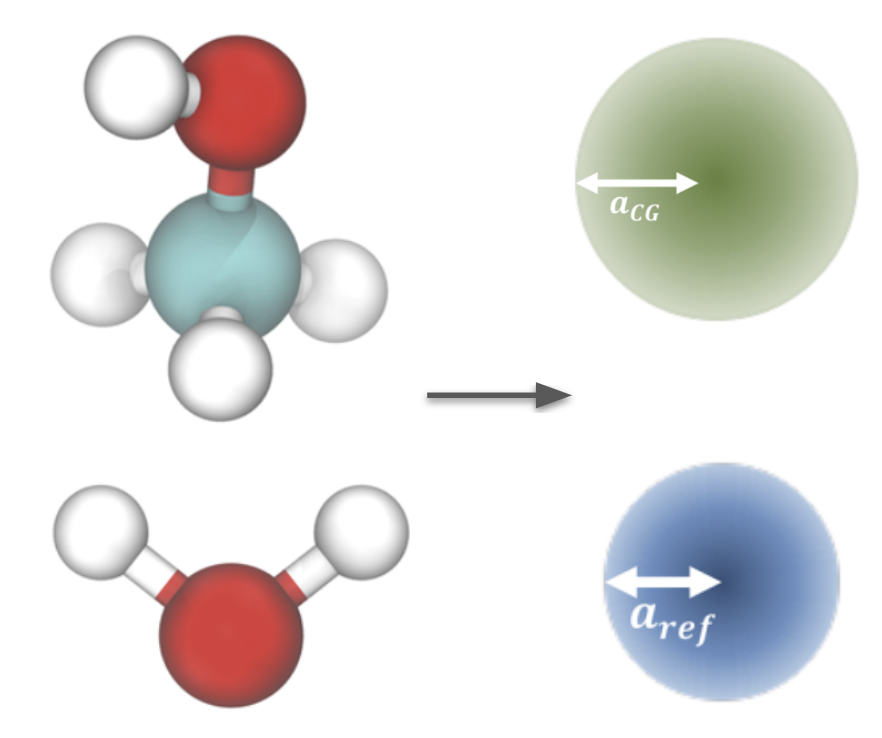

Methanol-Water
Dodecane is a first case study involving multiple bead types, and its interactions with water is an example of coarse graining an immiscible molecule pair.
This case study uses the following coarse-grained mapping:

And it assumes that water interactions have already been derived following previous case study, and that methanol has been derived in an analogous fashion using the same \(P_{cg}\) as the water system.
As outlined in the theoretical considerations, coarse graining a mixture takes some care in choosing a coarse graining ensemble. To this end, we use the external potential ensemble, easily implemented by applying a sinusoidal potential to one of the species (in this case, water) to force a density response.
Code can be found in the repository. The methanol-water notebook introduces how to obtain thermodynamically faithful coarse grained methanol-water interactions using the external potential ensemble.